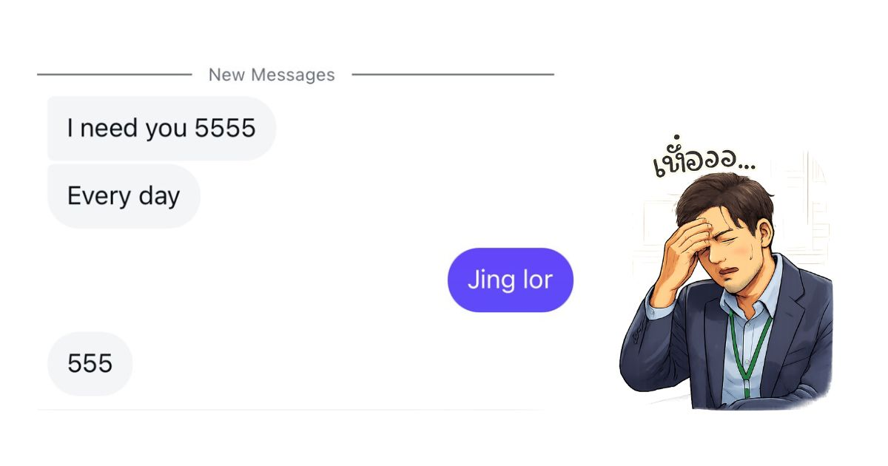

เปิดพศ.ใหม่ ประเดิมลาป่วยพบแพทย์เช็คคอ
พี่ชายสุดหล่อครอปทีมทำออฟฟิศสะเทือน
เปิดศักราชใหม่ได้ไม่ทันไร ออฟฟิศก็ต้องสะเทือนเล็กน้อย เมื่อ พี่ชายสุดหล่อแห่งครอปทีม ขอประเดิมปีด้วยการลาป่วย เพื่อเข้าพบแพทย์ตรวจเช็กอาการเจ็บคอแบบจริงจัง
เหตุการณ์ดังกล่าวทำให้เพื่อนร่วมทีม โดยเฉพาะ น้องชายหุ่นนายแบบ (สุดที่รักของทีม) ออกมาให้สัมภาษณ์สั้น ๆ ว่า
“i need you everyday”
สร้างแรงสั่นสะเทือนทางอารมณ์ให้กับผู้พบเห็นเป็นอย่างมาก จนหลายคนเริ่มตั้งคำถามว่า นี่คืออาการป่วยธรรมดา หรือเป็นช่องว่างในใจของใครบางคนกันแน่
“อย่าคิดไปไกลจ้า เค้าแค่อยากหาคนมาซัพพอททำงานให้จ้า”
“พวกผช มันชอบหลอกใช้กะเทย”
😂 0
🤦♀️ 0
🔥 0
💀 0